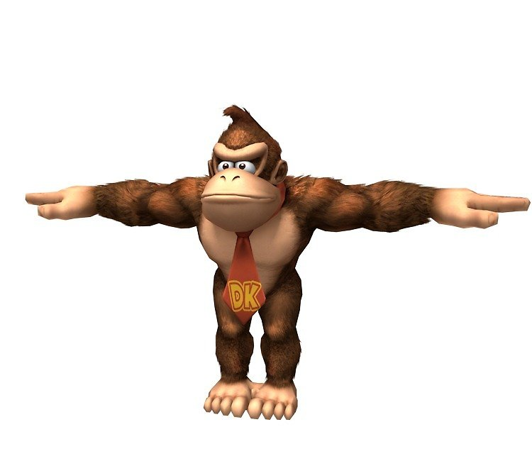

Donkey Kong
The Legacy of Donkey Kong: A Pioneer in Gaming History The video game industry has witnessed many iconic characters and franchises, but few have had the enduring influence of Donkey Kong. First introduced by Nintendo in 1981, Donkey Kong not only marked the birth of one of gaming's most beloved characters but also laid the groundwork for the rise of Nintendo as a global gaming giant. This essay explores the origins, evolution, and cultural impact of Donkey Kong, demonstrating its significance in the gaming world. The Birth of a Classic Donkey Kong debuted as an arcade game designed by a then-unknown Nintendo employee, Shigeru Miyamoto. The game featured a simple yet innovative premise: players controlled a character, later named Mario, tasked with rescuing a damsel in distress, Pauline, from a giant, barrel-throwing ape named Donkey Kong. The game's mechanics, involving jumping over obstacles and climbing structures, were groundbreaking for their time, offering players a unique challenge that demanded both strategy and precision. This initial release was a significant turning point for Nintendo. Before Donkey Kong, the company had struggled to gain traction in the North American market. The game's success not only established Nintendo as a formidable player in the gaming industry but also introduced Mario, who would go on to become one of the most recognizable characters in video game history. Evolution of the Franchise Following the success of the original game, the Donkey Kong franchise expanded in various directions. In 1982, Donkey Kong Jr. was released, shifting the focus to Donkey Kong's son, who must rescue his father from Mario. This sequel flipped the narrative and gameplay dynamics, showcasing Nintendo's willingness to innovate within its franchises. The series saw a significant revival in the 1990s with the release of Donkey Kong Country for the Super Nintendo Entertainment System (SNES). Developed by Rare, this game introduced a new art style using pre-rendered 3D graphics, which were revolutionary at the time. It also expanded Donkey Kong's character into a jungle-dwelling hero, accompanied by sidekicks like Diddy Kong. The gameplay emphasized platforming and collectibles, setting a standard for future titles. In the years since, Donkey Kong has appeared in numerous spin-offs, including rhythm games like Donkey Konga, racing titles such as Diddy Kong Racing, and as a staple character in crossover franchises like Super Smash Bros. These appearances have cemented Donkey Kong as a versatile and enduring figure in gaming. Cultural Impact and Legacy Donkey Kong's influence extends far beyond the confines of video games. As one of the earliest examples of narrative in gaming, it demonstrated the potential for games to tell engaging stories. The character has become a symbol of Nintendo's creativity and innovation, representing the company's rise to prominence in the 1980s and 1990s. Moreover, Donkey Kong has left an indelible mark on pop culture. The game inspired merchandise, an animated TV series, and even a competitive gaming scene, famously chronicled in the documentary The King of Kong: A Fistful of Quarters. Its catchy music, iconic sound effects, and memorable characters have become ingrained in the collective memory of gamers worldwide. Conclusion Donkey Kong is more than just a video game character; it is a testament to the power of innovation and storytelling in the gaming industry. From its humble beginnings as an arcade game to its evolution into a multi-faceted franchise, Donkey Kong has consistently pushed the boundaries of what games can achieve. As the series continues to thrive, its legacy as a pioneer in gaming history remains undisputed, inspiring generations of players and developers alike.  image representing Donkey Kong